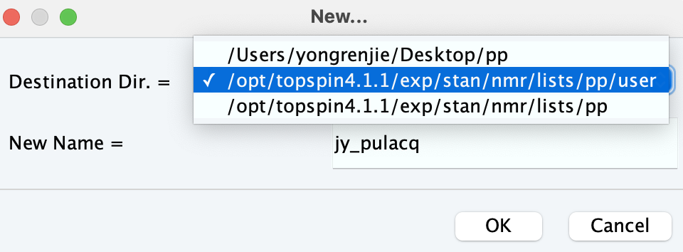
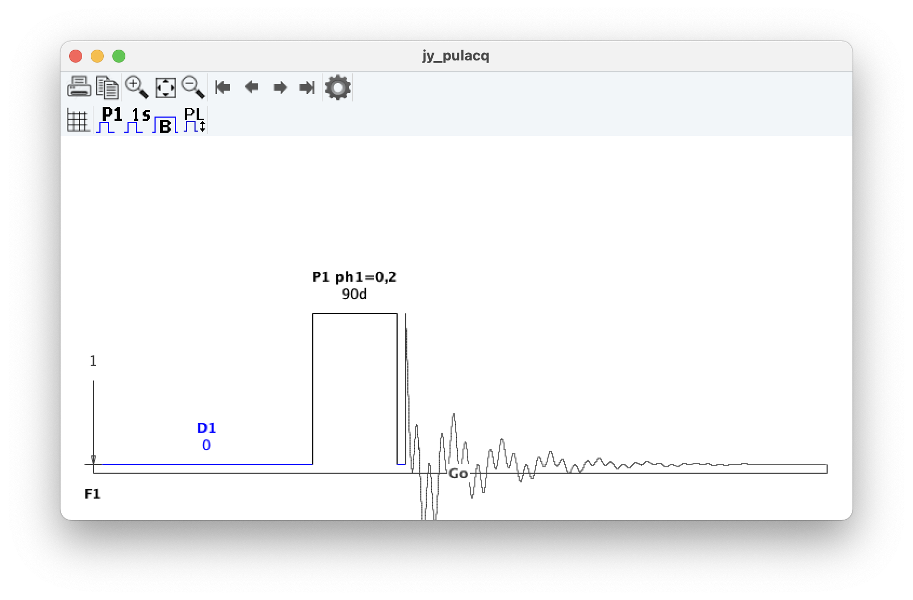

Here we’ll write our very first pulse programme from scratch, namely a pulse–acquire sequence.
(This is part 2 of a series of posts on pulse programming in TopSpin. For the other parts, see the table of contents here.)
What does pulse–acquire mean?
As the name suggests, a pulse–acquire sequence has two components:
- An excitation pulse, which tips magnetisation from its equilibrium position (\(+z\)) into the \(xy\)-plane.
- A detection period in which we acquire the FID.
zg, or pulse–acquire, sequence.This is the sequence used for a typical 1D 1H experiment, for example. (A typical 13C experiment is slightly more complicated because there is also decoupling going on during the detection period.)
The pulse programme
In fact, when writing a pulse programme, we must take care of more than just these two things. Indeed, the point of this post is more to introduce all the surrounding bells and whistles, which is why we want to keep the actual pulse sequence itself as simple as possible.
First, create a new pulse programme by typing edpul, then clicking File > New. For the destination directory, choose the .../lists/pp/user directory which we discussed in the previous post; and for the name, choose something like <INIT>_pulacq, where <INIT> refers to your initials.

The header
We’ll start by adding some comments at the top of the file, to tell us what the pulse programme is about. Comments get used for lots of things, including instructions on how to run the pulse sequence, suggested parameter values, literature references, and so on.
Anything after a semicolon indicates a comment, so the following lines are all comments. Start by adding a few lines of description, similar to these, at the very top of the pulse programme.
; jy_pulacq
; pulse-acquire sequence
; Jonathan Yong, 4 July 2021Next, we need to include a definition file, which contains a series of instructions for the spectrometer.1
#include <Avance.incl>It’s quite unlikely that you’ll ever need to care about this, so it suffices to say that every pulse programme needs this, and that you should insert it. There are other definition files out there which “enhance” the pulse programming capabilities. We will deal with those when we need to.
At this point, it’s probably a good idea (although by no means mandatory) to add 1 or 2 blank lines before continuing.
The recovery delay
Before we apply a pulse to a nucleus, we should ideally like the spin system to be at equilibrium. In order to do so, we need to start off the pulse sequence with a delay, which refers to a period in which nothing happens (no pulses are applied, etc.) The delay at the start of the pulse programme is typically called a recovery delay, or relaxation delay.
Delays are specified using the syntax dX, where X is a number between 0 and 31. Traditionally, for the recovery delay, we use X=1; thus the recovery delay is usually denoted by d1. (In principle it can be any number, however.) Add this to the bottom of your pulse programme, which should now look something like:
; jy_pulacq
; pulse-acquire sequence
; Jonathan Yong, 4 July 2021
#include <Avance.incl>
d1The pulse
Pulses are specified using the syntax (pX phY):fZ, where:
Xis a number (between 0 and 31) which specifies the duration of the pulse (in µs), also called the pulse width.If we have
X=1, for example, then the pulse width will be given by the TopSpin parameterp1. We will see later that this can be specified in the acquisition parameter screen.Yis a number (also between 0 and 31) which specifies the phase cycle to use for the pulse.Unlike the pulse width, the phase cycle must be written inside the pulse programme itself.
Zis a number indicating the channel which the pulse is applied on. Pulses for different nuclei must be executed on different channels (because they have different resonance frequencies). For now this will always be1, which generally corresponds to the 1H channel.
For now, we’ll keep it simple and use 1 throughout. So go ahead and add to your pulse programme:
(p1 ph1):f1Note that this should be on a separate line from the previous step’s d1! This signifies to TopSpin that the pulse is to be executed after the recovery delay.
The acquisition
FID acquisition is most simply specified using the go keyword. Specifically, the syntax is go=X phY, where :
Xis a label telling us where to restart the pulse programme from if we want to acquire more than one scan. Labels can technically be anything, but conventionally numbers seem to be used the most often.Yis another number (between 0 and 31) indicating the receiver phase cycle.Usually big numbers are used, so let’s go with31for now.
We haven’t created any labels yet. Where should we make one? Well, between scans, we probably want to make sure that we go back and execute the recovery delay, d1, again. So the label can be attached to d1. In order to do so, modify the d1 line by adding 1 in front of it followed by a space.2 If you’ve been following closely, your pulse programme should now look like:
; jy_pulacq
; pulse-acquire sequence
; Jonathan Yong, 4 July 2021
#include <Avance.incl>
1 d1
(p1 ph1):f1We’ve now created the label called 1, which gives us something to put in the X above. We also decided above that Y is 31. So, we can now add the acquisition line at the bottom, again on a new line of its own:
go=1 ph31At this point, the pulse sequence is over: we need to add the exit keyword to tell TopSpin this. So do this on a new line, immediately after the go statement.
Specifying the phase cycles
So far, we’ve said that our pulse will have the phase cycle ph1, and the receiver will have the phase cycle ph31. But we haven’t actually said what any of these are. Let’s say we want a two-step \((x, -x)\) phase cycle for the pulse. This can be specified using
ph1 = 0 2Recall that ph1 was the phase cycle that we chose for our pulse. The 0 and 2 correspond to the \(x\) and \(-x\) phases respectively (1 and 3 would correspond to \(y\) and \(-y\), which we aren’t using here).
The receiver phase needs to be ‘in sync’ with the pulse phase, in order to make sure that the signal from multiple scans adds up. So we can similarly write:
ph31 = 0 2Place both of these lines at the bottom of your pulse programme. The whole thing should now look something like
; jy_pulacq
; pulse-acquire sequence
; Jonathan Yong, 4 July 2021
#include <Avance.incl>
1 d1
(p1 ph1):f1
go=1 ph31
exit
ph1 = 0 2
ph31 = 0 2We’re almost there! In fact, if you save your pulse programme now (via Ctrl-S or Cmd-S or plain old File > Save), then click Graphical Edit, you should something similar to the following.

zg pulse programme.Where does the data go?
There’s one more technical issue which we have to contend with before we can have a usable pulse programme, which is that the go acquisition keyword only records the data and stores it in a memory buffer.3 It doesn’t actually save our data to a file on the hard disk which we can read.4 This means we can’t actually access our data after the experiment ends, which (needless to say) is pretty bad!
We need one more command after go to tell the spectrometer to write the accumulated data to disk. This command is wr #0: the wr stands for ‘write’, and #0 is an internal symbol which tells TopSpin to save it to the current expno directory. (The expno is the number associated with each experiment; you can view this in TopSpin’s left sidebar.) Place this on a line of its own, after the go statement, but before the exit statement.
Also, it’s also a good idea to erase the memory buffer before starting the experiment, so that we start from scratch. This is done with the command zd. Place this before the 1 d1 line.
Altogether, our pulse programme should look like this:
; jy_pulacq
; pulse-acquire sequence
; Jonathan Yong, 4 July 2021
#include <Avance.incl>
zd
1 d1
(p1 ph1):f1
go=1 ph31
wr #0
exit
ph1 = 0 2
ph31 = 0 2This is a fully functional pulse programme. If you made it all the way here, congratulations! In the next post, we’ll see how to run this experiment; we’ll also make some small but useful improvements to the pulse programme.
Footnotes
If you want to see what’s inside this file, you can find it at
.../lists/pp/Avance.incl. It’s mostly indecipherable. Don’t modify it!↩︎With numbers it suffices to put the number and a space in front, but with other strings, you need to add a comma. For example, if you wanted the label
recovery, then you would have to writerecovery, d1.↩︎The contents of this memory buffer can be viewed in the rightmost ‘Acqu’ tab in TopSpin.↩︎
If it’s not obvious what this means, think of it as opening a new file and typing a bunch of useful stuff in, but never actually saving it somewhere on the computer. Once you close the file, it’s gone forever.↩︎